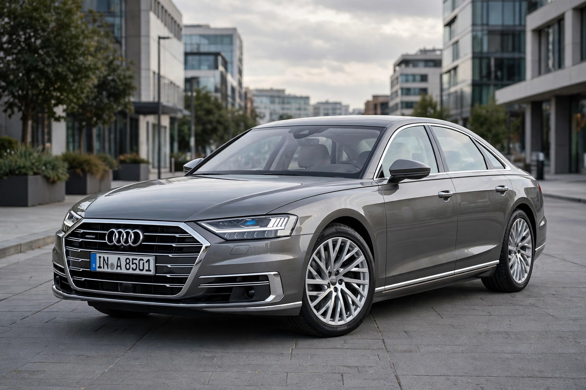

Audi
From Wikipedia, the free encyclopedia
| Audi AG | |
 | |
| Type | Subsidiary (AG) |
|---|---|
| Industry | Automotive |
| Founded | 1909 (as Audiwerke); origins to 1899 |
| Founder | August Horch |
| Headquarters | Ingolstadt, Bavaria, Germany |
| Products | Luxury vehicles |
| Parent | Volkswagen Group |
| Slogan | Vorsprung durch Technik ("Progress through technology") |
| Website | audi.com |
Audi AG is a German luxury automobile manufacturer headquartered in Ingolstadt, Bavaria. A member of the Volkswagen Group, Audi produces vehicles in the premium segment, competing with BMW and Mercedes-Benz. Its four-ring logo represents the 1932 merger of four Saxon manufacturers — Audi, DKW, Horch and Wanderer — into Auto Union.
History
August Horch founded the Horch company in 1899 and, after a dispute with its board, left in 1909 to found a new firm. Unable to reuse his own name, he translated "Horch" (German for "listen") into Latin: Audi. The four predecessor companies merged in 1932 as Auto Union AG, whose racing cars — the Silver Arrows — rivalled Mercedes-Benz in 1930s Grand Prix racing.
Re-established in West Germany after the war, Auto Union was acquired by Volkswagen in the 1960s, which relaunched the Audi name with the F103 series in 1965. The Audi 100 (1968) and the Quattro (1980) — the first high-volume car with all-wheel drive — defined the modern brand. Audi's Quattro system dominated rallying in the 1980s. In the 2010s the brand was implicated in the diesel emissions scandal. Audi has since shifted toward electric vehicles under its e-tron line.
Motorsport
Audi won the 24 Hours of Le Mans 13 times between 2000 and 2014, pioneering diesel and hybrid winners, and has announced an entry into Formula One in 2026 through the acquisition of the Sauber team. The company owns the Italian supercar maker Lamborghini and the British luxury marque Bentley is a sister brand within the group.